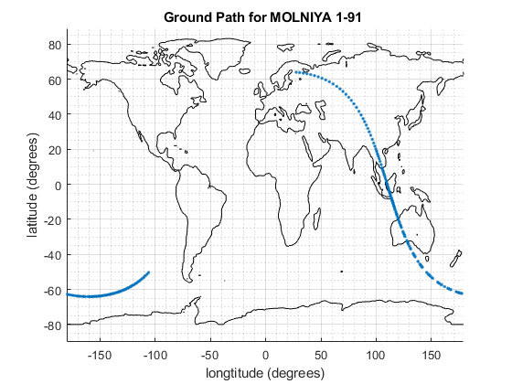

Contents
% AERSP 450 HW 1 Problem 4 % Made by Nicholas Luis, PSU ID: 930841391 close all;
ISS (ZARYA)
1 25544U 98067A 24259.04042691 -.00020782 00000+0 -36841-3 0 9993 2 25544 51.6359 230.2949 0007613 354.9391 85.5828 15.49088255472489
clear; clc; MU = 3.986 * (10^5); % km^3 / s^2 PI = 3.141592654; % Orbit Data from the TLE n = 15.49088255; % Revolutions per day e = 0.0007613; % Eccentricity M0 = 85.5828; % Initial Mean Anomaly w = 354.9391; % Argument of perigee i = 51.6359; % Inclination W = 230.2949; % Right ascension of ascending node ERA = [0, 36, 10]; % GMST based on the provided website using epoch data T = 86400/n; % Period of orbit (in seconds per 1 revolution) a = ((T/(2*PI))^2 * MU)^(1/3); t = linspace(0,T,500); % Incremental time t0 = t(1); M = M0 + n.*(t/86400).*360; % Mean anomaly at every point in the orbit % Converting M (mean anomaly) to E (eccentric anomaly) and f (true anomaly) E = zeros(size(M)); for iter = 1 : length(M) E(iter) = mean2true(M(iter), e); end E0 = E(1); f0 = 2*atan( sqrt((1+e)/(1-e)) * tan(E(1)/2) ) * (180/PI); % Getting initial radius and speed using derived equations p = a*(1-e^2); r0 = p / (1+e*cosd(f0)); v0 = sqrt(2*MU/r0 - MU/a); % Calculating Langrange Coefficients using Block 2 (elliptic orbit) F = zeros(1,length(E)); G = zeros(1,length(E)); for iter = 1 : length(E) F(iter) = 1 - (a/r0).*(1-cosd(E(iter)-E0)); G(iter) = (t(iter)-t0) - sqrt(a^3/MU).*((E(iter)-E0).*(PI/180)-sind(E(iter)-E0)); end % Getting initial position and velocity vectors in perifocal frame r = zeros(length(t), 3); r(1,:) = [r0*cosd(f0), r0*sind(f0), 0]; % e, p, h hat directions v = zeros(length(t), 3); v(1,:) = [-sqrt(MU/p)*sind(f0), sqrt(MU/p)*(e+cosd(f0)), 0]; % e, p, h hat directions % Calculating 1-orbit-worth of future positions for iter = 2 : length(t) % Start at t = 2 because we already have initial conditions r(iter,:) = F(iter)*r(1,:) + G(iter)*v(1,:); end % Rotation Matrices R3W = [cosd(W), -sind(W), 0; sind(W), cosd(W), 0; 0 , 0 , 1 ]; % Rotation around axis 3 by W (Right ascension of ascending node) degrees R1i = [1, 0 , 0; 0, cosd(i), -sind(i); 0, sind(i), cosd(i) ]; % Rotation around axis 1 by i (inclination) degrees R3w = [cosd(w), -sind(w), 0; sind(w), cosd(w), 0; 0 , 0 , 1 ]; % Rotation around axis 3 by w (argument of perigee) degrees R_IP = R3w*(R1i*R3W); ERA_degrees = [ERA(1)*15, ERA(2)*15/60, ERA(3)*15/60/60]; gamma0 = sum(ERA_degrees); % Rotating position vectors to get it in ECEF frame (at every point in time) for iter = 1 : length(t) % Start at t = 2 because we already have initial conditions g = gamma0 - (15/3600)*t(iter); R3g = [cosd(g), -sind(g), 0; sind(g), cosd(g), 0; 0 , 0 , 1 ]; % Rotation around axis 3 by g (GMST angle) degrees R_EI = R_IP*R3g; r(iter,:) = R_EI*r(iter,:)'; end % Converting position to lattitude and longitude longitude = zeros(length(r),1); latitude = zeros(length(r),1); for iter = 1 : length(r) %longitude(iter) = (180/PI)*atan(r(iter, 2) / r(iter, 1)); % longtude equation using ECEF coords longitude(iter) = (180/PI)*atan2(r(iter, 2), r(iter, 1)); latitude(iter) = (180/PI)*atan(r(iter, 3) / sqrt(r(iter, 1)^2 + r(iter, 2)^2 )); % lattitude equation using ECEF coords end figure(1) hold on load('topo.mat','topo'); topoplot = [topo(:,181:360),topo(:,1:180)]; contour(-180:179,-90:89,topoplot,[0,0],'black'); grid on grid minor plot(longitude,latitude,'.','LineWidth',2) xlabel("longtitude (degrees)") ylabel("latitude (degrees)") title('Ground Path for ISS (ZARYA)') hold off
JUPITER 3 (ECHOSTAR 24) : This is the heaviest commericial satellite ever launched, let alone in geostationary
1 57479U 23108A 24257.28463005 -.00000150 00000+0 00000+0 0 9999 2 57479 0.0225 150.4751 0001204 19.0167 190.5107 1.00269368 4212
clear; MU = 3.986 * (10^5); % km^3 / s^2 PI = 3.141592654; % Orbit Data from the TLE n = 1.00269368; % Revolutions (times 360 degrees) per day e = 0.0001204; % Eccentricity M0 = 190.5107; % Initial Mean Anomaly w = 19.0167; % Argument of perigee i = 0.0225; % Inclination W = 150.4751; % Right ascension of ascending node ERA = [06, 24, 51]; % GMST based on the provided website using epoch data T = 86400/n; % Period of orbit (in seconds per 1 revolution) a = ((T/(2*PI))^2 * MU)^(1/3); t = linspace(0,T,500); % Incremental time t0 = t(1); M = M0 + n.*(t/86400).*360; % Mean anomaly at every point in the orbit % Converting M (mean anomaly) to E (eccentric anomaly) and f (true anomaly) E = zeros(size(M)); for iter = 1 : length(M) E(iter) = mean2true(M(iter), e); end E0 = E(1); f0 = 2*atan( sqrt((1+e)/(1-e)) * tan(E(1)/2) ) * (180/PI); % Getting initial radius and speed using derived equations p = a*(1-e^2); r0 = p / (1+e*cosd(f0)); v0 = sqrt(2*MU/r0 - MU/a); % Calculating Langrange Coefficients using Block 2 (elliptic orbit) F = zeros(1,length(E)); G = zeros(1,length(E)); for iter = 1 : length(E) F(iter) = 1 - (a/r0).*(1-cosd(E(iter)-E0)); G(iter) = (t(iter)-t0) - sqrt(a^3/MU).*((E(iter)-E0).*(PI/180)-sind(E(iter)-E0)); end % Getting initial position and velocity vectors in perifocal frame r = zeros(length(t), 3); r(1,:) = [r0*cosd(f0), r0*sind(f0), 0]; % e, p, h hat directions v = zeros(length(t), 3); v(1,:) = [-sqrt(MU/p)*sind(f0), sqrt(MU/p)*(e+cosd(f0)), 0]; % e, p, h hat directions % Calculating 1-orbit-worth of future positions for iter = 2 : length(t) % Start at t = 2 because we already have initial conditions r(iter,:) = F(iter)*r(1,:) + G(iter)*v(1,:); end % Rotation Matrices R3W = [cosd(W), -sind(W), 0; sind(W), cosd(W), 0; 0 , 0 , 1 ]; % Rotation around axis 3 by W (Right ascension of ascending node) degrees R1i = [1, 0 , 0; 0, cosd(i), -sind(i); 0, sind(i), cosd(i) ]; % Rotation around axis 1 by i (inclination) degrees R3w = [cosd(w), -sind(w), 0; sind(w), cosd(w), 0; 0 , 0 , 1 ]; % Rotation around axis 3 by w (argument of perigee) degrees R_IP = R3w*(R1i*R3W); ERA_degrees = [ERA(1)*15, ERA(2)*15/60, ERA(3)*15/60/60]; gamma0 = sum(ERA_degrees); % Rotating position vectors to get it in ECEF frame (at every point in time) for iter = 1 : length(t) % Start at t = 2 because we already have initial conditions g = gamma0 - (15/3600)*t(iter); R3g = [cosd(g), -sind(g), 0; sind(g), cosd(g), 0; 0 , 0 , 1 ]; % Rotation around axis 3 by g (GMST angle) degrees R_EI = R_IP*R3g; r(iter,:) = R_EI*r(iter,:)'; end % Converting position to lattitude and longitude longitude2 = zeros(length(r),1); latitude2 = zeros(length(r),1); for iter = 1 : length(r) %longitude(iter) = (180/PI)*atan(r(iter, 2) / r(iter, 1)); % longtude equation using ECEF coords longitude2(iter) = (180/PI)*atan2(r(iter, 2), r(iter, 1)); latitude2(iter) = (180/PI)*atan(r(iter, 3) / sqrt(r(iter, 1)^2 + r(iter, 2)^2 )); % lattitude equation using ECEF coords end figure(2) hold on load('topo.mat','topo'); topoplot = [topo(:,181:360),topo(:,1:180)]; contour(-180:179,-90:89,topoplot,[0,0],'black'); grid on grid minor plot(longitude2,latitude2,'.','LineWidth',2) %plot(longitude2(1:10),latitude2(1:10),'.','LineWidth',2) xlabel("longtitude (degrees)") ylabel("latitude (degrees)") title('Ground Path for JUPITER 3 (ECHOSTAR 24)') hold off
MOLNIYA 1-91
1 25485U 98054A 24258.47584262 -.00000047 00000+0 00000+0 0 9999 2 25485 64.1500 21.4697 6821298 289.9022 12.2134 2.36441173198427
clear; MU = 3.986 * (10^5); % km^3 / s^2 PI = 3.141592654; % Orbit Data from the TLE n = 2.36441173; % Revolutions (times 360 degrees) per day e = 0.6821298; % Eccentricity M0 = 12.2134; % Initial Mean Anomaly w = 289.9022; % Argument of perigee i = 64.1500; % Inclination W = 21.4697; % Right ascension of ascending node ERA = [11, 04, 53]; % GMST based on the provided website using epoch data T = 86400/n; % Period of orbit (in seconds per 1 revolution) a = ((T/(2*PI))^2 * MU)^(1/3); t = linspace(0,T,500); % Incremental time t0 = t(1); M = M0 + n.*(t/86400).*360; % Mean anomaly at every point in the orbit % Converting M (mean anomaly) to E (eccentric anomaly) and f (true anomaly) E = zeros(size(M)); for iter = 1 : length(M) E(iter) = mean2true(M(iter), e); end E0 = E(1); f0 = 2*atan( sqrt((1+e)/(1-e)) * tan(E(1)/2) ) * (180/PI); % Getting initial radius and speed using derived equations p = a*(1-e^2); r0 = p / (1+e*cosd(f0)); v0 = sqrt(2*MU/r0 - MU/a); % Calculating Langrange Coefficients using Block 2 (elliptic orbit) F = zeros(1,length(E)); G = zeros(1,length(E)); for iter = 1 : length(E) F(iter) = 1 - (a/r0).*(1-cosd(E(iter)-E0)); G(iter) = (t(iter)-t0) - sqrt(a^3/MU).*((E(iter)-E0).*(PI/180)-sind(E(iter)-E0)); end % Getting initial position and velocity vectors in perifocal frame r = zeros(length(t), 3); r(1,:) = [r0*cosd(f0), r0*sind(f0), 0]; % e, p, h hat directions v = zeros(length(t), 3); v(1,:) = [-sqrt(MU/p)*sind(f0), sqrt(MU/p)*(e+cosd(f0)), 0]; % e, p, h hat directions % Calculating 1-orbit-worth of future positions for iter = 2 : length(t) % Start at t = 2 because we already have initial conditions r(iter,:) = F(iter)*r(1,:) + G(iter)*v(1,:); end % Rotation Matrices R3W = [cosd(W), -sind(W), 0; sind(W), cosd(W), 0; 0 , 0 , 1 ]; % Rotation around axis 3 by W (Right ascension of ascending node) degrees R1i = [1, 0 , 0; 0, cosd(i), -sind(i); 0, sind(i), cosd(i) ]; % Rotation around axis 1 by i (inclination) degrees R3w = [cosd(w), -sind(w), 0; sind(w), cosd(w), 0; 0 , 0 , 1 ]; % Rotation around axis 3 by w (argument of perigee) degrees R_IP = R3w*(R1i*R3W); ERA_degrees = [ERA(1)*15, ERA(2)*15/60, ERA(3)*15/60/60]; gamma0 = sum(ERA_degrees); % Rotating position vectors to get it in ECEF frame (at every point in time) for iter = 1 : length(t) % Start at t = 2 because we already have initial conditions g = gamma0 - (15/3600)*t(iter); R3g = [cosd(g), -sind(g), 0; sind(g), cosd(g), 0; 0 , 0 , 1 ]; % Rotation around axis 3 by g (GMST angle) degrees R_EI = R_IP*R3g; r(iter,:) = R_EI*r(iter,:)'; end % Converting position to lattitude and longitude longitude3 = zeros(length(r),1); latitude3 = zeros(length(r),1); for iter = 1 : length(r) %longitude(iter) = (180/PI)*atan(r(iter, 2) / r(iter, 1)); % longtude equation using ECEF coords longitude3(iter) = (180/PI)*atan2(r(iter, 2), r(iter, 1)); latitude3(iter) = (180/PI)*atan(r(iter, 3) / sqrt(r(iter, 1)^2 + r(iter, 2)^2 )); % lattitude equation using ECEF coords end figure(3) hold on load('topo.mat','topo'); topoplot = [topo(:,181:360),topo(:,1:180)]; contour(-180:179,-90:89,topoplot,[0,0],'black'); grid on grid minor plot(longitude3,latitude3,'.','LineWidth',2) xlabel("longtitude (degrees)") ylabel("latitude (degrees)") title('Ground Path for MOLNIYA 1-91 ') hold off
COSMOS 2569 (703K)
1 57517U 23114A 24258.24908306 .00000071 00000+0 00000+0 0 9995 2 57517 64.9566 94.2948 0008739 295.2308 64.7601 2.13103887 8606
clear; MU = 3.986 * (10^5); % km^3 / s^2 PI = 3.141592654; % Orbit Data from the TLE n = 2.13103887; % Revolutions (times 360 degrees) per day e = 0.0008739; % Eccentricity M0 = 64.7601; % Initial Mean Anomaly w = 295.2308; % Argument of perigee i = 64.9566; % Inclination W = 94.2948; % Right ascension of ascending node ERA = [05, 37, 27]; % GMST based on the provided website using epoch data T = 86400/n; % Period of orbit (in seconds per 1 revolution) a = ((T/(2*PI))^2 * MU)^(1/3); t = linspace(0,T,500); % Incremental time t0 = t(1); M = M0 + n.*(t/86400).*360; % Mean anomaly at every point in the orbit % Converting M (mean anomaly) to E (eccentric anomaly) and f (true anomaly) E = zeros(size(M)); for iter = 1 : length(M) E(iter) = mean2true(M(iter), e); end E0 = E(1); f0 = 2*atan( sqrt((1+e)/(1-e)) * tan(E(1)/2) ) * (180/PI); % Getting initial radius and speed using derived equations p = a*(1-e^2); r0 = p / (1+e*cosd(f0)); v0 = sqrt(2*MU/r0 - MU/a); % Calculating Langrange Coefficients using Block 2 (elliptic orbit) F = zeros(1,length(E)); G = zeros(1,length(E)); for iter = 1 : length(E) F(iter) = 1 - (a/r0).*(1-cosd(E(iter)-E0)); G(iter) = (t(iter)-t0) - sqrt(a^3/MU).*((E(iter)-E0).*(PI/180)-sind(E(iter)-E0)); end % Getting initial position and velocity vectors in perifocal frame r = zeros(length(t), 3); r(1,:) = [r0*cosd(f0), r0*sind(f0), 0]; % e, p, h hat directions v = zeros(length(t), 3); v(1,:) = [-sqrt(MU/p)*sind(f0), sqrt(MU/p)*(e+cosd(f0)), 0]; % e, p, h hat directions % Calculating 1-orbit-worth of future positions for iter = 2 : length(t) % Start at t = 2 because we already have initial conditions r(iter,:) = F(iter)*r(1,:) + G(iter)*v(1,:); end % Rotation Matrices R3W = [cosd(W), -sind(W), 0; sind(W), cosd(W), 0; 0 , 0 , 1 ]; % Rotation around axis 3 by W (Right ascension of ascending node) degrees R1i = [1, 0 , 0; 0, cosd(i), -sind(i); 0, sind(i), cosd(i) ]; % Rotation around axis 1 by i (inclination) degrees R3w = [cosd(w), -sind(w), 0; sind(w), cosd(w), 0; 0 , 0 , 1 ]; % Rotation around axis 3 by w (argument of perigee) degrees R_IP = R3w*(R1i*R3W); ERA_degrees = [ERA(1)*15, ERA(2)*15/60, ERA(3)*15/60/60]; gamma0 = sum(ERA_degrees); % Rotating position vectors to get it in ECEF frame (at every point in time) for iter = 1 : length(t) % Start at t = 2 because we already have initial conditions g = gamma0 - (15/3600)*t(iter); R3g = [cosd(g), -sind(g), 0; sind(g), cosd(g), 0; 0 , 0 , 1 ]; % Rotation around axis 3 by g (GMST angle) degrees R_EI = R_IP*R3g; r(iter,:) = R_EI*r(iter,:)'; end % Converting position to lattitude and longitude longitude4 = zeros(length(r),1); latitude4 = zeros(length(r),1); for iter = 1 : length(r) %longitude(iter) = (180/PI)*atan(r(iter, 2) / r(iter, 1)); % longtude equation using ECEF coords longitude4(iter) = (180/PI)*atan2(r(iter, 2), r(iter, 1)); latitude4(iter) = (180/PI)*atan(r(iter, 3) / sqrt(r(iter, 1)^2 + r(iter, 2)^2 )); % lattitude equation using ECEF coords end figure(4) hold on load('topo.mat','topo'); topoplot = [topo(:,181:360),topo(:,1:180)]; contour(-180:179,-90:89,topoplot,[0,0],'black'); grid on grid minor plot(longitude4,latitude4,'.','LineWidth',2) xlabel("longtitude (degrees)") ylabel("latitude (degrees)") title('Ground Path for COSMOS 2569 (703K)') hold off
STARLETTE
1 07646U 75010A 24258.93756172 -.00000102 00000+0 34095-4 0 9995 2 07646 49.8222 111.7558 0205657 107.9496 254.3932 13.82332614505978
clear; MU = 3.986 * (10^5); % km^3 / s^2 PI = 3.141592654; % Orbit Data from the TLE n = 13.82332614; % Revolutions (times 360 degrees) per day e = 0.0205657; % Eccentricity M0 = 254.3932; % Initial Mean Anomaly w = 107.9496; % Argument of perigee i = 49.8222; % Inclination W = 111.7558; % Right ascension of ascending node ERA = [22, 11, 35]; % GMST based on the provided website using epoch data T = 86400/n; % Period of orbit (in seconds per 1 revolution) a = ((T/(2*PI))^2 * MU)^(1/3); t = linspace(0,T,500); % Incremental time t0 = t(1); M = M0 + n.*(t/86400).*360; % Mean anomaly at every point in the orbit % Converting M (mean anomaly) to E (eccentric anomaly) and f (true anomaly) E = zeros(size(M)); for iter = 1 : length(M) E(iter) = mean2true(M(iter), e); end E0 = E(1); f0 = 2*atan( sqrt((1+e)/(1-e)) * tan(E(1)/2) ) * (180/PI); % Getting initial radius and speed using derived equations p = a*(1-e^2); r0 = p / (1+e*cosd(f0)); v0 = sqrt(2*MU/r0 - MU/a); % Calculating Langrange Coefficients using Block 2 (elliptic orbit) F = zeros(1,length(E)); G = zeros(1,length(E)); for iter = 1 : length(E) F(iter) = 1 - (a/r0).*(1-cosd(E(iter)-E0)); G(iter) = (t(iter)-t0) - sqrt(a^3/MU).*((E(iter)-E0).*(PI/180)-sind(E(iter)-E0)); end % Getting initial position and velocity vectors in perifocal frame r = zeros(length(t), 3); r(1,:) = [r0*cosd(f0), r0*sind(f0), 0]; % e, p, h hat directions v = zeros(length(t), 3); v(1,:) = [-sqrt(MU/p)*sind(f0), sqrt(MU/p)*(e+cosd(f0)), 0]; % e, p, h hat directions % Calculating 1-orbit-worth of future positions for iter = 2 : length(t) % Start at t = 2 because we already have initial conditions r(iter,:) = F(iter)*r(1,:) + G(iter)*v(1,:); end % Rotation Matrices R3W = [cosd(W), -sind(W), 0; sind(W), cosd(W), 0; 0 , 0 , 1 ]; % Rotation around axis 3 by W (Right ascension of ascending node) degrees R1i = [1, 0 , 0; 0, cosd(i), -sind(i); 0, sind(i), cosd(i) ]; % Rotation around axis 1 by i (inclination) degrees R3w = [cosd(w), -sind(w), 0; sind(w), cosd(w), 0; 0 , 0 , 1 ]; % Rotation around axis 3 by w (argument of perigee) degrees R_IP = R3w*(R1i*R3W); ERA_degrees = [ERA(1)*15, ERA(2)*15/60, ERA(3)*15/60/60]; gamma0 = sum(ERA_degrees); % Rotating position vectors to get it in ECEF frame (at every point in time) for iter = 1 : length(t) % Start at t = 2 because we already have initial conditions g = gamma0 - (15/3600)*t(iter); R3g = [cosd(g), -sind(g), 0; sind(g), cosd(g), 0; 0 , 0 , 1 ]; % Rotation around axis 3 by g (GMST angle) degrees R_EI = R_IP*R3g; r(iter,:) = R_EI*r(iter,:)'; end % Converting position to lattitude and longitude longitude5 = zeros(length(r),1); latitude5 = zeros(length(r),1); for iter = 1 : length(r) %longitude(iter) = (180/PI)*atan(r(iter, 2) / r(iter, 1)); % longtude equation using ECEF coords longitude5(iter) = (180/PI)*atan2(r(iter, 2), r(iter, 1)); latitude5(iter) = (180/PI)*atan(r(iter, 3) / sqrt(r(iter, 1)^2 + r(iter, 2)^2 )); % lattitude equation using ECEF coords end figure(5) hold on load('topo.mat','topo'); topoplot = [topo(:,181:360),topo(:,1:180)]; contour(-180:179,-90:89,topoplot,[0,0],'black'); grid on grid minor plot(longitude5,latitude5,'.','LineWidth',2) xlabel("longtitude (degrees)") ylabel("latitude (degrees)") title('Ground Path for STARLETTE') hold off
Newton-Raphson Function
function Ef1 = mean2true(M, e) %Inputs a single number, Outputs a single number Ef0 = M; % Initial guess Ef1 = M + 1; % Ensures that loop exit condition is not prematurely called safety = 0; while ((abs(Ef1-Ef0) > 0.001) && (safety < 5000)) % Loops until the difference is negligible safety = safety + 1; Ef0 = Ef1; f = Ef0 - e*sin(Ef0) - M; f_prime = 1 - e*sin(Ef0); Ef1 = Ef0 - (f / f_prime); end end